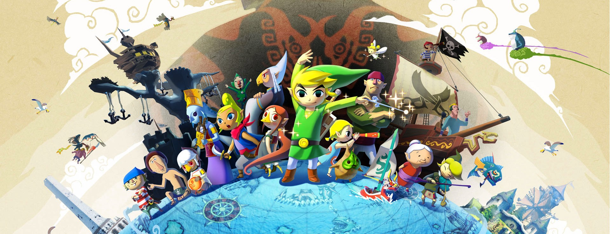
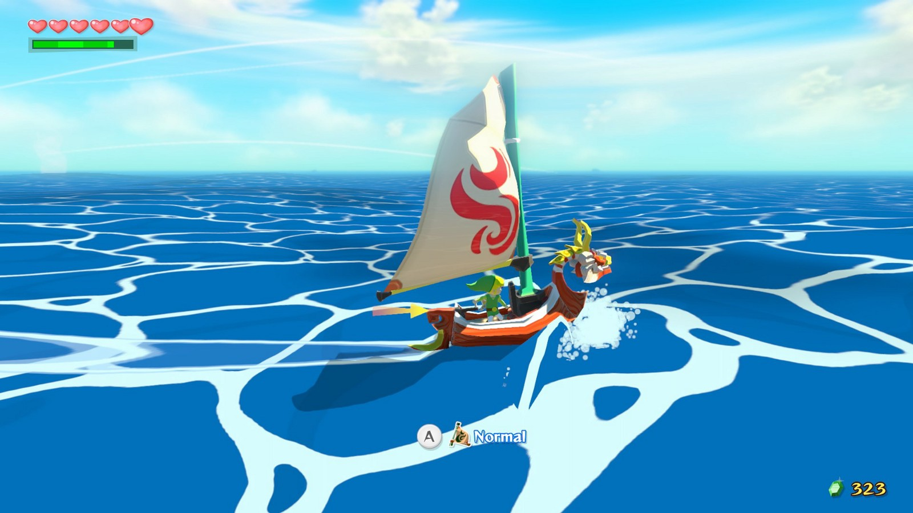
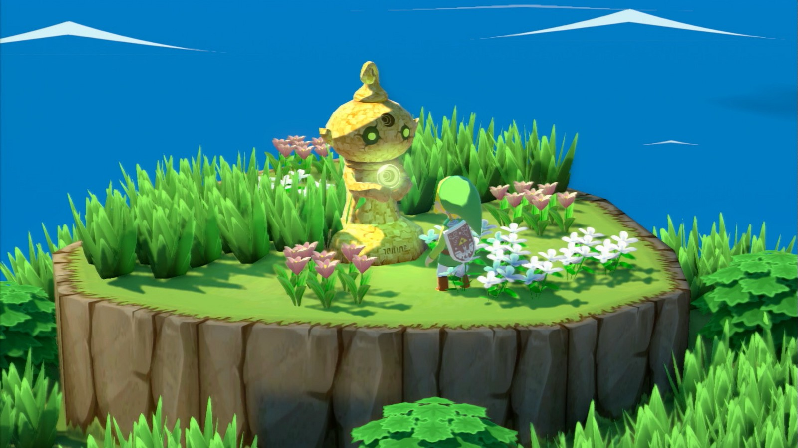
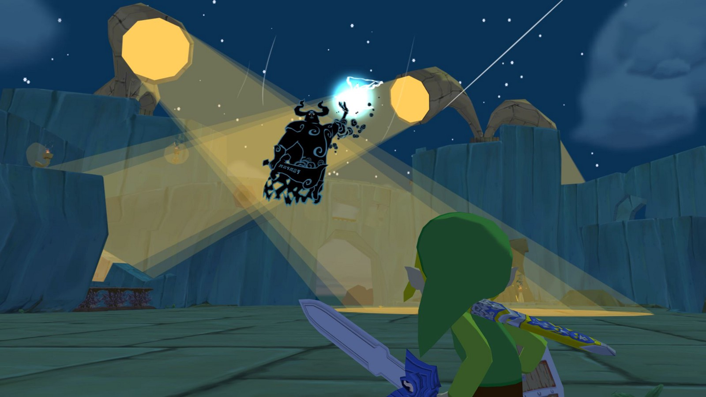
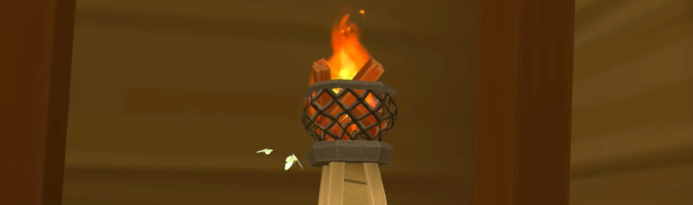
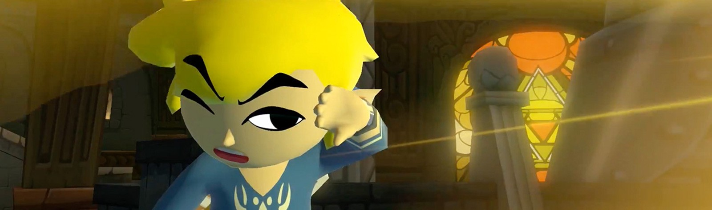
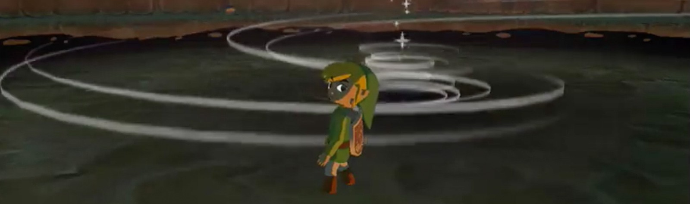
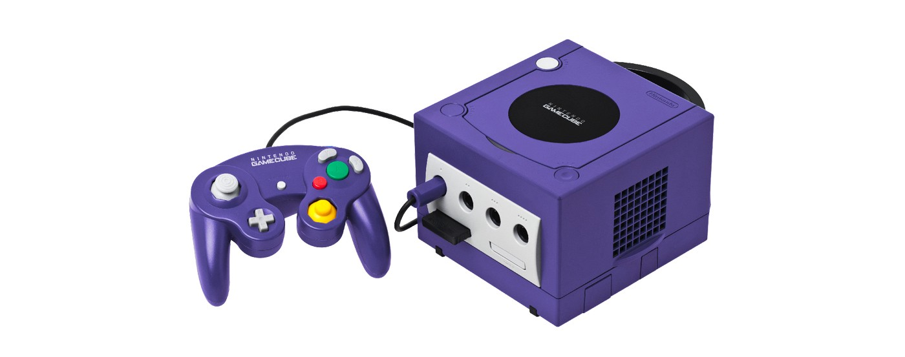
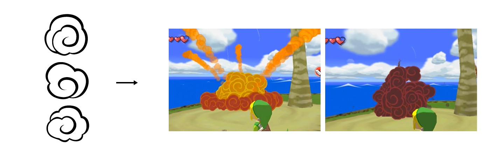
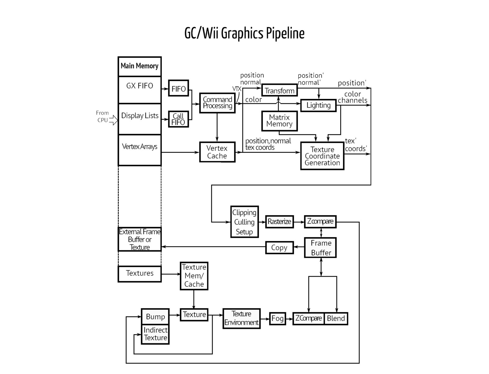

I’m a huge fan of Zelda, The Wind Waker’s graphics. Bright, caricatured and well balanced; they were a masterful combination of artistry and technical ingenuity.

By accepting the limitations of the hardware, and pushing for a stylised aesthetic, the artists and developers created one of the most-loved video game styles ever made. Even today they don’t look outdated, which is something you can say about very few games.
So how on earth did they achieve this? How did they merge the use of tiny textures with insanely low-poly geometries to create such heartwarming visuals?

In an attempt to learn from these masters, through analysing the game’s texture reads and a wireframe rendering, I’ll try to re-create some of the game’s visual effects using Threejs.

For the ultimate experience, I’d recommend listening to the incredibly uplifting soundtrack while reading on…
Click on the following links to access each analysis — each include a detailed walk-through and working codepens of the recreated effect.



Writing about these takes a while longer than just figuring them out, so please bear with me.
Explosions and Smoke
Splash
Lighting
Clouds
Wake
Shoreline
Waterfall
Please let me know if there are any effects in the game that you’d like to see analysed that aren’t on this list.
I initially thought I’d make one long article featuring all of the analyses one after the other as an easier way to read, but quickly realised actually how impossibly long that would be. So, I’ve chosen to separate them into unique articles, reducing the amount of videos and images your devices need to keep in memory at a time.
After publishing the first analysis, I received a lot of really amazing feedback, such as this excellent overview of the gamecube’s pipeline. It all helped me to further my understanding of the limitations that the developers faced, compared with the powerful pipeline available to us today. Even better, it helped me realise just how wrong I was about some things!

The biggest lesson being that the gamecube just flat-out did not have vertex and fragment shaders! In fact, only a very premature version of the kind of programmable shaders used today even existed at that time.
The GPU inside the gamecube did allow the developers to program a number of image processing and blending functions. Here is a brilliant project that has taken some of these GPU commands and transformed them into modern graphics shaders — the associated github can be found here.
As an example of what could be achieved, the developers could use a black and white image mask — as used in the ocean, fire and particle effects — and apply colours to those regions.

A lot of information on the gamecube’s GPU, Flipper, can be found in this extremely informative article about the Dolphin Emulator and the progress that they have made. None of this would have been possible without that amazing emulator, so my deepest thanks goes out to the developers!
Below is a detailed diagram of the graphics pipeline found in that article. Glean from it what you can!

So, even though the Gamecube didn’t support programmable shaders, I will continue to make them as advanced as necessary, along with other modern techniques in my recreations. This is a learning exercise after-all, so I still want to use the most efficient techniques to my knowledge, while applying the concepts that the Nintendo devs put in place all those many years ago!
Love reading game and graphics analyses? Check out these great sources:
Simon Schreibt’s Game Art Tricks
The Cutting Room Floor’s huge post on Wind Waker
Youtube channel Makin’ Stuff Look Good
Adrian Courrèges’ Graphics Study Blog
Special thanks goes to the amazing Dolphin Emulator’s devs — you guys are absolute champs in my book.
Onto the first analysis — The Ocean